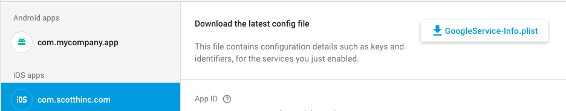
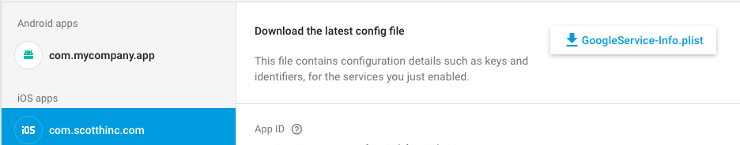

Firebase Database Plugin
This plugin allows you to access firebase database api.
Legacy:
This plugin is completely different from the old lua plugin. Please see docs and sourcePlatforms:
Android 5+ and iOS 8+Functions:
firebaseDatabase.init()
firebaseDatabase.setOnline(isActive)
--isActive(boolean) if set to true then we are online. If set to false we are offline.firebaseDatabase.setPersistenceEnabled(enabled)
--enabled(boolean) enable disk persistence which app writes the data locally to the device so your app can maintain state while offline, even if the user or operating system restarts the appfirebaseDatabase.set(path, data, listener)
-- set datapath(string) path to set data
data(string, boolean, interger, table) data to set at the path specified
listener(function) If event.isError == true then no data was set and an event.error is returned. If event.isError == false then data was set.
firebaseDatabase.update(path, data, listener)
-- update datapath(string) path to update data
data(table) data to update at the path specified
listener(function) If event.isError == true then no data was updated and an event.error is returned. If event.isError == false then data was updated.
firebaseDatabase.delete(path, listener)
-- delete datapath(string) path to delete data
listener(function) If event.isError == true then no data was deleted and an event.error is returned. If event.isError == false then data was deleted.
firebaseDatabase.get(path, listener, querySortFilter)
-- get datapath(string) path to get data
listener(function) If event.isError == true then no data was received and an event.error is returned. If event.isError == false then data was received and event.data is returned which contains data at given path.
querySortFilter(table)(optional) allows you to sort and filter data {sort="byKey", "byValue", or "byChild", sortChild= child to sort data(note sort must be set to "byChild"), limitedToFirst = number to limit, limitedToLast = number to limit, startingAtValue= number or string, startingAfterValue= number or string, endingAtValue= number or string, endingBeforeValue= number or string, equalToValue= number or string }
firebaseDatabase.startListener(path, listener, querySortFilter)
-- listen for new data changes for a path (note can only handle one path at a time)path(string) path to listen for new data change
listener(function) If event.isError == true then no data was received and an event.error is returned. If event.isError == false then data was received and event.data is returned which contains data at given path.
querySortFilter(table)(optional) allows you to sort and filter data {sort="byKey", "byValue", or "byChild", sortChild= child to sort data(note sort must be set to "byChild"), limitedToFirst = number to limit, limitedToLast = number to limit, startingAtValue= number or string, startingAfterValue= number or string, endingAtValue= number or string, endingBeforeValue= number or string, equalToValue= number or string }
firebaseDatabase.stopListener()
--stop listening for new data changesPlease go to your firebase console. Go to Realtime Database>Rules and turn off user auth for database realtime access
Make sure you download and include GoogleServices-Info.plist and put in root folder of corona project. Also add your google-services.json to your root folder and useGoogleServicesJson = true in build.settings.

 
